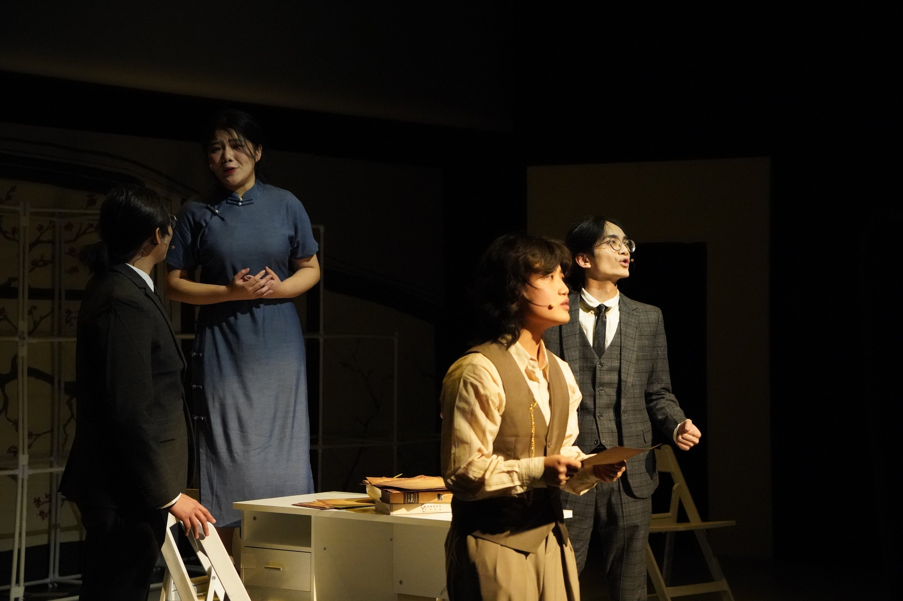
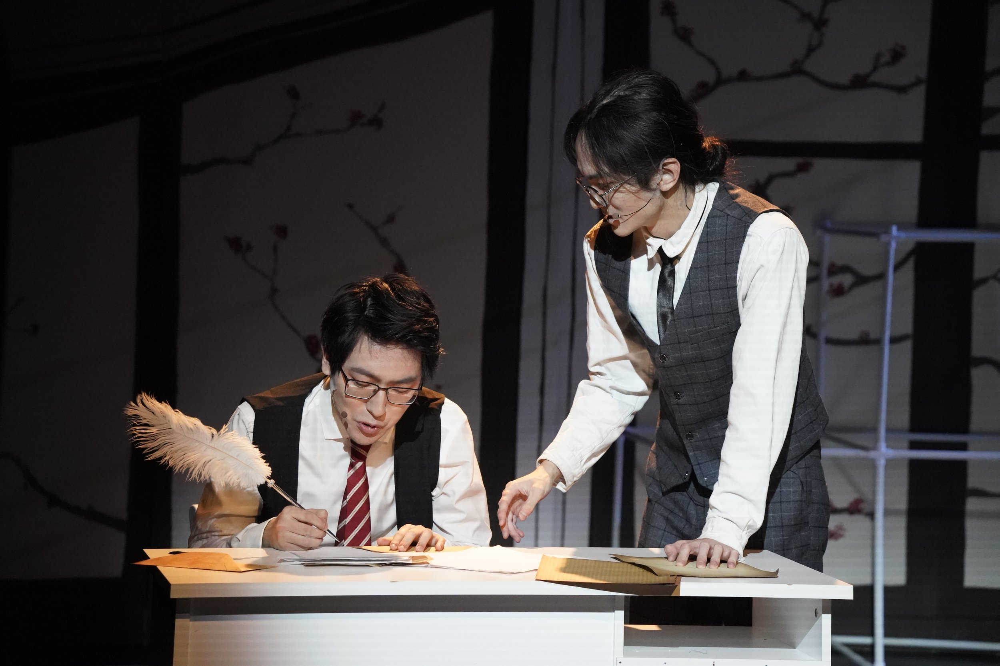
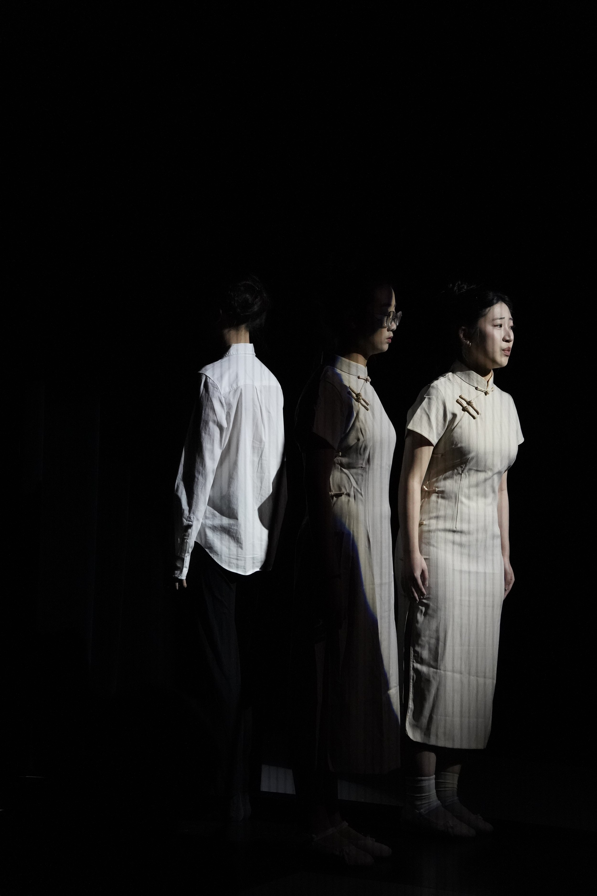
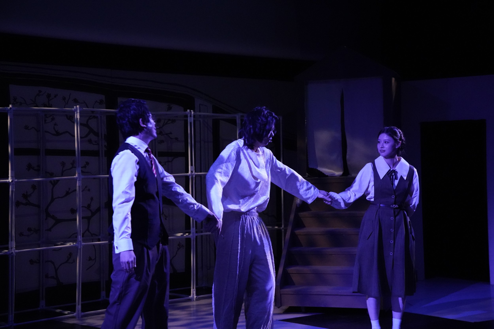
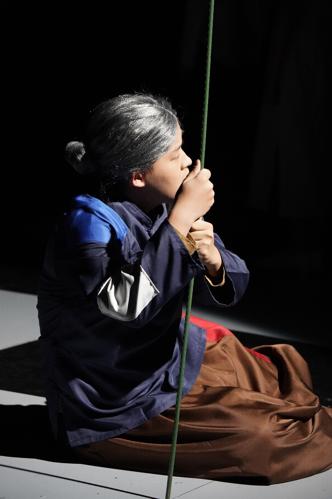
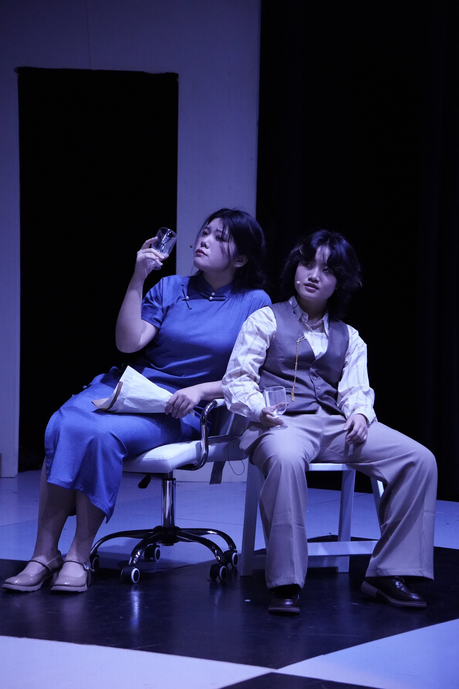

虽然被说没有想法游手好闲, 但我们为了纯粹艺术也心甘情愿; 即使在已被占领的土地上面, 艺术不能被控制也不能沦陷!



Director’s Notes
Sinners we are, drifting on withered leaves.
Summer ablaze, we burn, ne’er to reprieve.
When we are in the design process of the show in summer, I wrote this couplet, feeling the beauty of the summer burning me when it ends. I almost emphasize with Weilan, feeling the same torture having to live with an illusion and end it himself.
Haiming, Weilan, and Xiaguang tangoes through seasons. They met in spring, love in late summer, and that love—— if we call it love, dies in the winter. Their ambiguous love, their pain, so moving that it transcend to the form of literature which comfort, if not save people from the cruelty of war.
Shanghai was an island in 1940. The walls surrounding the concession numb people. Weilan’s dilemma is a projection of all——this illusion of flourishing Shanghai amidst battleground, this ambiguity of choice people made, all reflect in the story that seem to be unconnected to war. Maybe this is how literature communes with all of us.
The curtain rises, and a spotlight falls on a performer singing onstage. He is performing a scene from a Shanghai opera (Huju). Scattered around him are a few audience members, weary and dusty from travel, though dressed decently.
The lights fade. On one side of the stage, a screen lights up, showing footage of the war unfolding across Europe.
The lights go out again. The other side of the stage lights up, revealing a crowd gathered in the street to watch a revolutionary street play.

